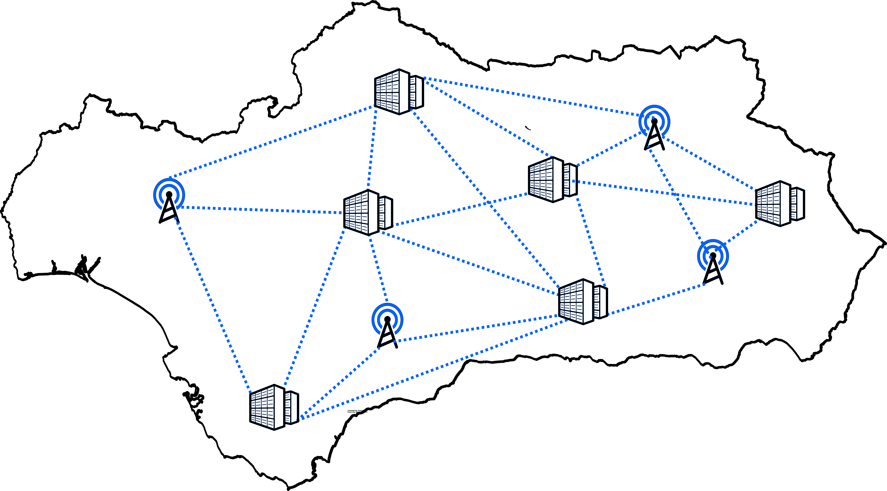

Índice
¿Qué es Internet?
Lo primero para entender como fue creado Internet es definirlo y una manera de hacerlo es decir que se trata de una red mundial de redes de ordenadores, una red de redes mediante la cual cualquier ordenador puede conseguir información o comunicarse con otro ordenador de esta red utilizando un sistema de reglas de comunicación llamado TCP/IP.
Y es que es literalmente una red de redes, observa esta explicación gráfica:
En tu casa ya existe una red de dispositivos unidos a tu router:

Esta pequeña red se conecta a un centro de datos de tu localidad y a la vez a otras redes de otros edificios:

Esta red a su vez se conecta a otras redes conectadas a otros centros de datos en tu provincia:

Que a su vez se conecta a una similar del resto de provicincias y toda la Comunidad Autónoma, todas estas conexiones pueden ser por cable o inalambricas:
Y esta además a otros centros de datos de España:

De la misma manera, se transmite al resto de Europa:

Y finalmente, al mundo, incluso por satélite:

Es por eso que a Internet se la conoce como una red de redes, como muestran las imágenes, es literalmente una masiva red compuesta por pequeñas redes a su vez compuestas por redes más pequeñas, y así sucesivamente.
¿Cómo nace una red de redes?
Como casi todo, internet nació a partir de una necesidad, en este caso, la necesidad de transmitir y asegurar información. En el año 1962 la compañía telefónica BELL comercializó el primer módem capaz de transmitir 300 bits de información por segundo usando la mayor infraestructura de transmisión de información de la época, las líneas telefónicas y telegráficas. Este módem fue desarrollado a petición de la NORAD (North American Aerospace Defence) ya que tras descubrir ese mismo año que en Rusia consiguió poner misiles en Cuba al alcance de EEUU querían estar preparados para un ataque a los puntos más importantes de la defensa del país, los centros de datos y comunicaciones, aunque en este año solo pondrían en marcha las investigaciones sobre cómo hacerlo, el proceso para conseguirlo fue encomendado a ARPA (Advanced Research Projects Agency), uno de los muchos departamentos de defensa de Estados Unidos.
Fue en el año 1969 en el que ARPA desarrolló esta nueva tecnología, conocida como ARPANET, para hacerla, se instalaron los primeros dispositivos IMP (Interface Message Processor) en cuatro universidades Estadounidenses, dispositivos desarrollados por Leonard Kleinrock que con los años evolucionaron para convertirse en lo que hoy conocemos como routers. A través de estos dispositivos y después de algunos intentos fallidos consiguieron enviar el primer mensaje usando ARPANET de un nodo a otro a una distancia de 566 km.
Tras su primer éxito, la red no hizo más que crecer, en 1971 ya existían 24 computadoras conectadas, pertenecientes a universidades y centros de investigación y este número aumentó hasta 213 ordenadores en el año 1981, con un promedio de un ordenador nuevo conectado a la red cada 20 días, entre ellos computadores de Reino Unido y Noruega vía satélite.
En 1981 se definieron las reglas de conexión a esta red, una serie de buenas prácticas para conectarse correctamente con un dispositivo a esta red conocidas como protocolo TCP/IP además de llamarse por primera vez “Internet” y solo dos años más tarde , en 1983, Internet contaba con 500 computadoras conectadas a su red.
Más de 100.000 ordenadores fueron conectados al Internet original nacido de ARPANET antes de que desapareciera ARPANET en 1989 y en 1990 se creara el primer navegador web llamado WorldWideWeb.
Evolución de Internet
1. Primeros Pasos.
En 1991, un año más tarde de la creación del primer navegador web se anuncia el sistema World Wide Web, por el cual se pueden transmitir diversos tipos de datos usando el Protocolo de Transferencia de Hipertextos, o HTTP. Estos datos se generan usando un lenguaje informático de marcas conocido como HTML, lenguaje que permite crear documentos para compartir a través de internet y a los que se accede a través de un sistema de Localización Uniforme de Recursos unidireccional también llamado URL, que es la dirección concreta que determina cada uno de los recursos que se encuentra en Internet, es decir, un identificador propio para cada página, archivo, o documento que haya en la red.
Navegador web sin interfaz.

El creador de esta World Wide Web, el físico británico Tim Berners-Lee fue el primero en publicar una web tal y como la conocemos hoy en Internet, web que simplemente informaba sobre cómo usar la World Wide Web. Web que por cierto, puede seguir visitandose hoy día, puedes hacerlo en el siguiente enlace. (Aunque no es realmente la original, fue restaurada en 2013 para conmemorar a su autor Tim Berners -Lee):
Como has podido ver en los enlaces navegar por internet no tenía nada que ver con lo sencillo e intuitivo que es hoy, de hecho, una de las principales problemáticas de la época era que el navegador principal de la web solo funcionaba en sistemas Unix y además no disponía de una interfaz gráfica como las conocemos hoy ni de buscador de páginas webs, a pesar de todo esto un año más tarde, la popularidad y el uso de Internet explotó, llegando al millón de computadoras conectadas, a pesar de ello, el uso de internet seguiría siendo considerado un nicho hasta su modernización en los años posteriores.
2. Modernización.
En enero de 1993 el National Center for Supercomputing Applications (NCSA) creó Mosaic, el primer navegador web con un entorno gráfico disponible para visualizar páginas web basado en Unix, poco después fue liberado y se crearon versiones para dispositivos Microsoft Windows y Macintosh entre otros.
Aunque Mosaic fue descontinuado en 1997, dos de los navegadores más usados hoy día están basados en el, Internet Explorer y Mozilla.
Navegador web Mosaic

Merece la pena mencionar, que existían otros navegadores web que no llegaron a ser tan relevantes como Mosaic sin embargo hubo uno creado en 1992 al que hoy día se le considera adelantado a su época, el llamado ViolaWWW. Se ganó esta fama ya que a pesar de ser publicado hace 30 años ya disponía de un lenguaje de scripts similar a JavaScript y Hojas de estilo en cascada parecidas a las que hoy se usan con CSS, aunque puede que su escasa popularidad y derrota frente a Mosaic se debiera a que solo soportaba gráficos en blanco y negro y su funcionalidad estaba restringida a entornos Windows.
Junto con los primeros navegadores aparecieron los primeros buscadores de páginas web. En 1993, Matthew Gray, un estudiante de física del MIT decidió desarrollar usando el lenguaje Perl un programa llamado World Wide Web Wanderer que era capaz de recorrer Internet y almacenar webs.
El “Wanderer”, como fue conocido este programa, se convirtió en el primer web crawler automatizado, y aunque no era capaz de llegar a todas las webs que albergaba Internet, almacenaba webs de manera consistente y fue capaz de generar un índice llamado Wandex en el que se podían buscar las webs indexadas por este primer robot web.
Tras la creación de los primeros buscadores web, en 1994, nació la web profunda o deep web, que se puede definir como el contenido de internet que no ha sido indexado por los motores de búsqueda por diversos factores como:
- Webs contextuales cuyo contenido cambia dependiendo de la IP del cliente.
- Páginas dinámicas que cambian dependiendo de la respuesta a un formulario.
- Páginas no enlazadas a otras webs.
- Contenido no HTML.
- Páginas y software oculto intencionalmente.
También existe lo conocido como internet académica invisible, se trata de un conjunto de bases de datos académicos que no es posible encontrar por motores de búsqueda convencionales. Un ejemplo de sitio web académico grande al que no se puede acceder de manera convencional es la base de datos del famoso dispositivo de amazon Alexa, una base de datos conectada a internet, a la que no se puede acceder de manera corriente y que tiene más de 15.000 GBs de información..
3. Popularización.
Para cuando nació el motor de búsqueda más popular de la historia, Google en 1998, ya había más de diez millones de computadoras conectadas a Internet. La popularidad de Google creció rápidamente gracias al nuevo enfoque que le dió a su buscador, el cual le aplicaba a la búsqueda un algoritmo al que llamaron “PageRank” que era capaz de ordenar por relevancia el contenido resultante,, esto automáticamente se convirtió en un estándar para todos los motores de búsqueda, aceptando que no era práctico revisar listas completas de resultados sin ordenar.
En los años posteriores a la creación de Google nacieron muchas webs y tecnologías que son consideradas revolucionarias, como la enciclopedia más grande jamás creada, la Wikipedia, que se ganó esté título en 2007 cuando alcanzó los dos millones de artículos publicados cantidad que hoy día queda lejos de los casi seis millones y medio artículos que contiene.
También es relevante mencionar la aparición de Facebook en 2004, una red social que cuenta con más de 2700 millones de usuarios activos en 2018 y ayudó a popularizar internet haciendo que las personas pudieran socializar de una manera más natural a través de su web.
Horas de uso de internet al día.

Todos estos factores hicieron más fácil y atractivo internet para todo tipo de personas y la red de redes llegó en 2005 a albergar 1.000 millones de usuarios activos pero este número no es más que una fracción de los usuarios que los usan hoy y esto es debido a factores como la modernización tanto de la infraestructura sobre la que se usa internet como de su accesibilidad para nuevos usuarios por parte de aplicaciones, interfaces y dispositivos.
Uno de los factores más relevantes para que hoy día haya conectados a internet 4.950 millones de usuarios, un 62,5% de la población total mundial, es sin duda la aparición del Iphone, el primer dispositivo que popularizó masivamente la web móvil en 2007 y la creación de WhatsApp, la aplicación de mensajería instantánea a través de internet para dispositivos móviles más popular y es que en enero de 2022 el 67,1% de los usuarios en de internet acceden a él mediante un dispositivo móvil.
Hoy día decir que internet es “popular” se queda corto, más bien se ha integrado en nuestra vida de manera natural hasta poder decir que es nuestro nuevo estilo de vida, esto se puede deducir a través del hecho de que durante el 2013 los usuarios de internet le dedicaban una media de 6 horas al día a navegar, tiempo que no ha hecho más que subir desde entonces hasta llegar a casi 7 horas diarias de media de uso de internet diario, siendo los principales motivos de uso la búsqueda de información, contactar con familiares o conocidos, mantenerse al día de noticias, eventos y novedades o ver videos, programas de televisión o películas.
Y es que hoy día internet no es precisamente una herramienta de un solo uso, lejos quedan los días en los que se usaba con el fin de transmitir y asegurar información académica o militar. Hoy día en internet puedes entretenerte viendo películas o series que incluso han sido creadas exclusivamente para publicarse en la red, trabajar, comunicarte con amigos o familiares, compartir ideas o conocimientos usando una gran variedad de redes sociales, aprender, gestionar tus finanzas… En definitiva, una serie de opciones que se han convertido abruptamente en indispensables para el día a día en la vida moderna. Las principales razones de uso de Internet hoy dia son:
- Encontrar información.
- Mantener contacto con amigos y familiares.
- Estar informado de noticias y eventos.
- Ver videos, programas de televisión y películas.
- Aprender nuevas habilidades.
- Encontrar nuevas ideas o inspiración.
- Escuchar música.
Puedes encontrar una lista más exaustiva aquí.
4. El futuro de internet.
Intentar predecir todo lo que internet cambiará sobre nuestra sociedad y formas de actuar actuales es casi imposible, pero sí que podemos vislumbrar ciertos caminos a los que se dirige y que probablemente ocurran tarde o temprano.
Internet se usa para todo hoy día y por ello sus innovaciones pueden llegar a cualquier ámbito, por ejemplo coches autónomos conectados a internet para aprender y recabar información y conducir cada vez mejor, búsqueda por voz eficiente por la cual no se buscarán conceptos en internet simplemente se harán preguntas o simplemente convertir en obsoletos otros aspectos de la vida diaria como el dinero físico y hacer que todas las transacciones se hagan a través de internet e incluso usando monedas virtuales.
Pero a parte de conceptos concretos internet tiene algunos aspectos generales que siguen siendo los objetivos principales a conseguir en el futuro y todos ellos están relacionados con lo que antiguamente ya lo hizo más popular y es la accesibilidad.
Un ejemplo de esto es la constante búsqueda por aumentar la velocidad de acceso a datos en internet con tecnologías inalámbricas como el 5G, que cada vez se acerca más a la velocidad de las redes por cable y amenazan con dejarlas obsoletas.
Y otro de los aspectos que creo pueden llegar a ser muy relevantes para el futuro de internet está relacionado con el transhumanismo, accesorios o implantes que nos faciliten el acceso y el uso a la red de redes o que nos den una experiencia más inmersiva a la hora de realizar ciertas tareas, como por ejemplo, vivir películas en lugar de verlas en el cine o manejar dispositivos con gestos analizados por algún tipo de implante muscular usando computación en la nube una tecnología que hace que cualquier dispositivo conectado a la red pueda realizar tareas para las que su hardware no está preparado usando potentes procesadores a través de internet, la llamada computación en la nube.
Webgrafía
¿Qué es Internet?
¿Cómo nace una red de redes?
- https://www.nobbot.com
- Wikipedia: Bell Telephone Company.
- Wikipedia: Bell Telephone Company.
- https://www.britannica.com
- Wikipedia: Interface Message Processor.
- https://portswigger.net
- Wikipedia: Wikipedia.
Evolución de Internet
1. Primeros pasos
2. Modernización
- Wikipedia: Mosaic.
- Wikipedia: ViolaWWW.
- Wikipedia: Motor de búsqueda.
- Wikipedia: Deep web.
- https://quod.lib.umich.edu